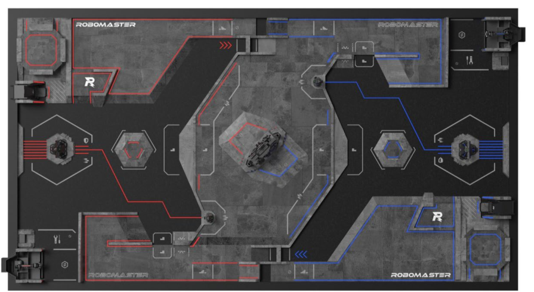

对抗强度总览
红蓝双方均为全国赛或复活赛手册队伍的全量对局。
队伍收益画像速览
按综合收益展示前 8 支队伍。
火力
装配
飞镖
队伍战术收益画像
交互式条形图：筛选、排序并点击队伍查看详情。
平均造成伤害
平均装配次数 x1400
平均飞镖伤害 x8
队伍指标表
44 支已命名手册队伍均匹配到区域赛指标。
| 学校 | 队名 | 类别 | 胜局率 | 平均伤害 | 装配 | 飞镖 | 战术画像 |
|---|
比赛预测
合并赛程模拟概率与队伍风格聚类，观察复活赛晋级和全国赛阶段概率。
预测概率明细
概率已合并风格分类，复活赛队伍的全国赛概率包含复活赛晋级前置条件。
风格聚类分布
按当前筛选结果统计队伍风格，并展示各风格中夺冠概率最高的队伍。
专题分析
围绕科技核心和地图控制展开。
官方场地图对局图集
96 场全量对局，选择一场后查看热力图或代表局轨迹图。
选择对局
BattleScope 代表局回放
正在准备回放
0s

数据与文档
项目内置 CSV、PNG 和 Markdown 文档。